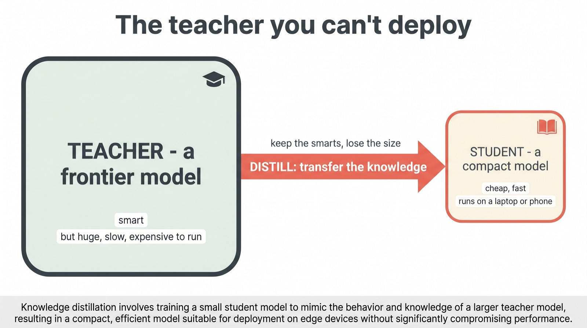
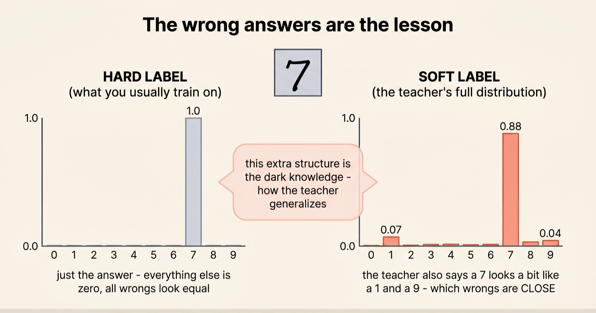
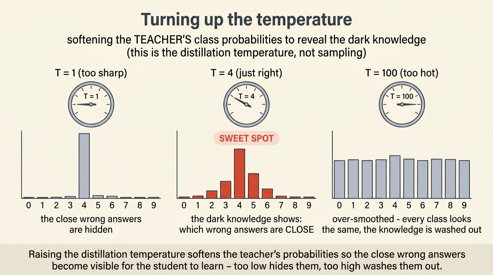
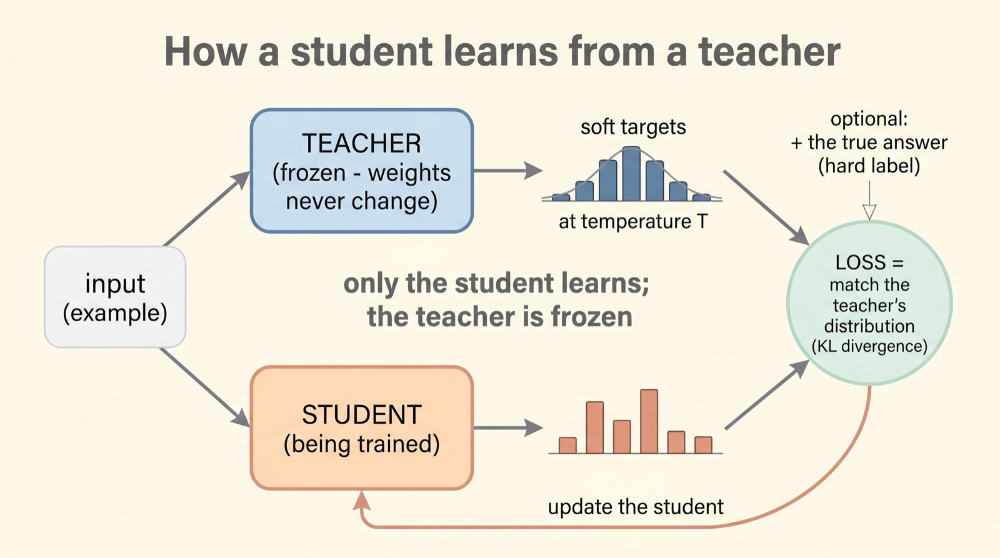
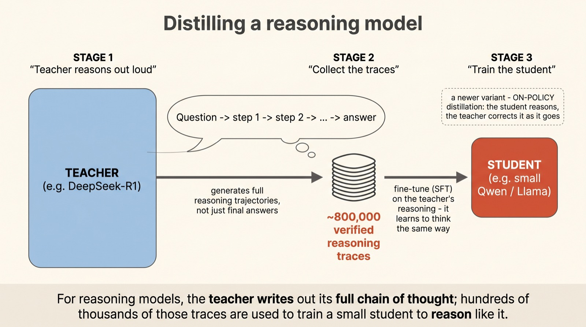
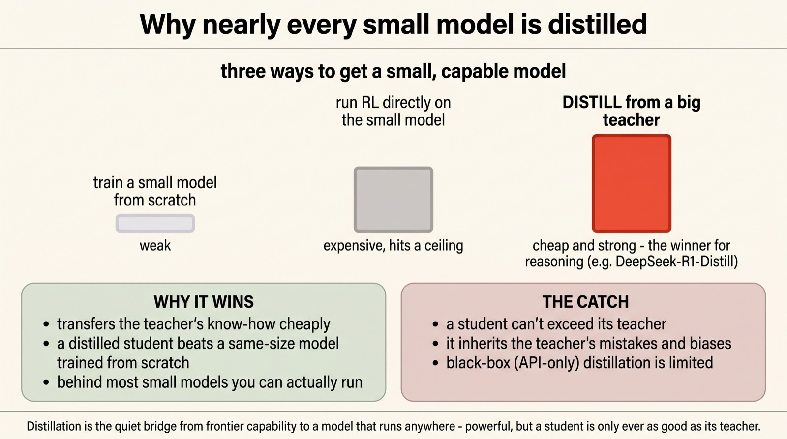

Knowledge distillation: how a big teacher trains a small student
The wrong answers
are the lesson
Almost every small model you can actually run — the one on your laptop, the cheap one behind an app — learned to be smart by copying a bigger one. The technique is called knowledge distillation, and its central trick is delightfully counterintuitive: the student learns most not from the right answers, but from how confidently the teacher is wrong.
Introduced by Geoffrey Hinton and colleagues in 2015, distillation trains a compact student to mimic a large teacher's full probability distribution — its "soft labels" — not just the final answer. Those soft labels carry hidden structure Hinton called dark knowledge. It's the same idea that, in 2026, turned DeepSeek-R1's reasoning into models small enough to run anywhere.
Scroll to begin.
↓
The teacher you can't deploy
The best AI models are, increasingly, monsters — hundreds of billions or trillions of parameters, demanding racks of expensive accelerators just to answer a question. They're brilliant, and they're almost impossible to put in your pocket. So the field has a standing problem: how do you get that brilliance into something small, cheap, and fast enough to actually deploy?
One option is to train a small model from scratch and hope. It rarely works well — a small model learning alone, from raw data, plateaus far below its giant cousin. The better option is to let the giant teach. Take the big model as a "teacher," take a small model as a "student," and transfer what the teacher knows directly into the student. That transfer is knowledge distillation.

The name evokes the right image: boil away the bulk, keep the essence. But the genius of distillation isn't in shrinking the model — that part is easy, you just pick a smaller architecture. The genius is in what you teach it with. And that turns out to hinge on a piece of information almost everyone throws away.
The wrong answers are the lesson
Picture training a model to recognise handwritten digits. The normal way uses a hard label: this image is a "7," full stop. In the math, that's a vector with a 1 on "7" and a 0 on everything else. It's correct — but look at how much it throws away. It declares every wrong answer equally wrong. A "1" is just as wrong as an "8," which is just as wrong as a "4."
But that's not how a good teacher sees it. Show the teacher a sloppy "7" and it'll say: 88% a seven — but honestly, a bit like a one, and a touch like a nine. That full distribution is the soft label, and the small probabilities on the wrong answers are pure gold. They encode which digits actually look alike — a whole map of similarity the hard label erased.

Hinton gave this hidden structure a wonderful name: dark knowledge. It's everything the teacher has learned about how concepts relate, sitting quietly in the tiny probabilities we normally round to zero. A single soft label teaches the student more than a hard one ever could — which is why a distilled student can learn so much, so fast. The only catch: in a confident teacher, those telltale small probabilities are vanishingly small. You need a way to bring them out.
Turning up the temperature
A well-trained teacher is confident, and confidence is the enemy here. Ask it about that "7" and it might say 99.7% seven, with the "one" and "nine" buried at 0.2% and 0.1%. The dark knowledge is there, but it's too faint for the student to learn from. We need to turn it up.
The knob for this is called temperature. The final step that turns a model's raw scores into probabilities — the softmax — has a temperature setting, and raising it softens the distribution: the tall spike comes down, the buried runner-ups rise into view. Set the temperature higher during distillation and suddenly the teacher's similarity map is legible. But there's a sweet spot — crank it too high and every option flattens to roughly equal, washing the knowledge back out.

It's a small, almost mischievous trick: deliberately make the confident teacher less certain, just long enough to read its mind. With the dark knowledge now visible, the only thing left is to actually pour it into the student.
How a student learns from a teacher
The training loop itself is simple, and once you've seen the soft labels it almost designs itself. The same example is shown to both models at once. The teacher — frozen, its weights never changing — produces its softened distribution. The student, still learning, produces its own.
Then you measure the gap between the two distributions (with a standard quantity called KL divergence, which is just "how far apart are these two probability distributions") and nudge the student to close it. Repeat over millions of examples and the student's outputs gradually slide into agreement with the teacher's — not just on the answers, but on the entire shape of its judgments. Often you add a second term so the student also gets the true answer right, blending real labels with the teacher's wisdom.

Distilling a reasoning model
That classic recipe was built for classifiers choosing between digits or objects. Today's headline use is different and, if anything, simpler to picture: distilling the reasoning of a giant model into a small one. This is how the famous small "reasoning" models of 2026 were born.
The modern twist is to let the teacher think out loud. A model like DeepSeek-R1 doesn't just output an answer — it writes a long chain of thought, step by step, to get there. So the recipe becomes: have the teacher solve hundreds of thousands of problems with its full reasoning shown, collect those trajectories, and fine-tune the student on them. DeepSeek curated roughly 800,000 verified reasoning traces and trained small Qwen and Llama students on them — plain supervised fine-tuning, no reinforcement learning required. The student learns to imitate not just what the teacher concluded, but how it reasoned its way there.

There's an even cleverer variant gaining ground, called on-policy distillation: instead of feeding the student a fixed pile of the teacher's old answers, you let the student attempt problems itself and have the teacher correct it as it goes — fixing the subtle mismatch between practising on someone else's work and doing your own. But the core idea is unchanged: the teacher's reasoning becomes the student's curriculum.
Why nearly every small model is distilled
Here's the payoff that made distillation the quiet backbone of the small-model era. When DeepSeek compared approaches, the distilled students didn't just do okay — they beat small models trained from scratch with expensive reinforcement learning. The shortcut wasn't a compromise; it was better.
That result generalises. The compact, capable open models you actually download and run are, overwhelmingly, students of something larger. Distillation is the bridge from a lab's frontier model to a model on your machine. But it's worth being honest about the limits. A student is fundamentally capped by its teacher — it can approach the teacher's ability but rarely exceed it — and it faithfully inherits the teacher's blind spots and biases along with its strengths. And when the teacher is a closed model you can only query, not inspect, you're distilling through a keyhole.

Why this matters
Step back and distillation reframes what "training a model" even means. We tend to imagine learning as a solitary act — a model facing a mountain of data alone. But the most efficient way we've found to make a capable small model isn't solitary at all. It's apprenticeship: a smaller mind learning at the elbow of a larger one.
That's why this unglamorous technique quietly underwrites so much of what you actually use. The reason a genuinely smart model can run on a phone, the reason an app can afford to call one a million times a day, the reason your VibeThinker-style small reasoner exists at all — it's very often because somewhere upstream, a giant taught a small one how to think.
The lesson worth keeping is the one we started with, and it's almost philosophical. The richest signal a teacher offers isn't the verdict — it's the shape of the uncertainty behind it: which wrong answers it found tempting, and how strongly. We spent years training models on hard answers and rounding the rest to zero. Distillation's quiet insight is that the part we rounded away was the most valuable part of all.